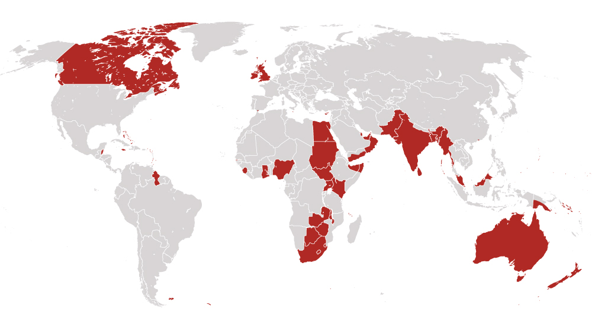
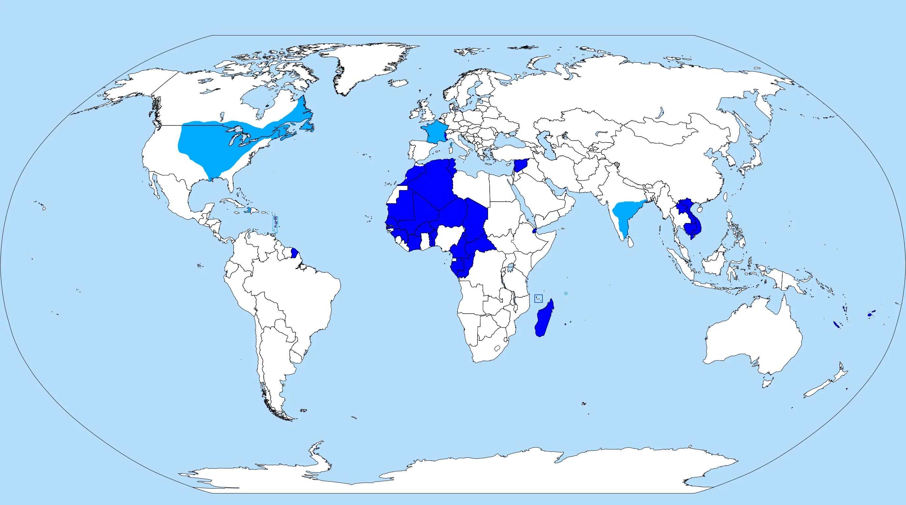
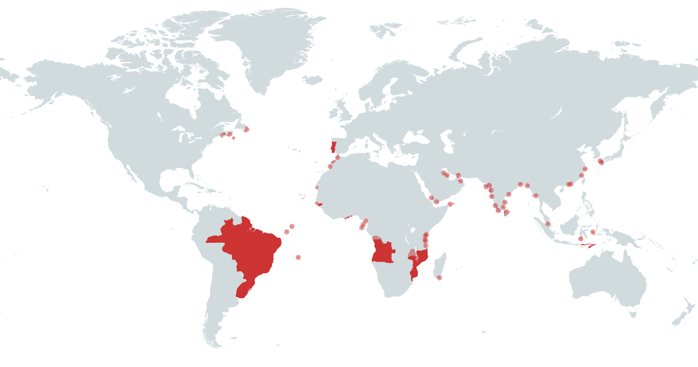
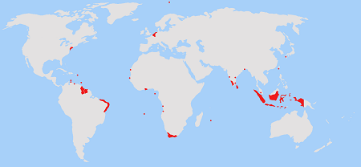
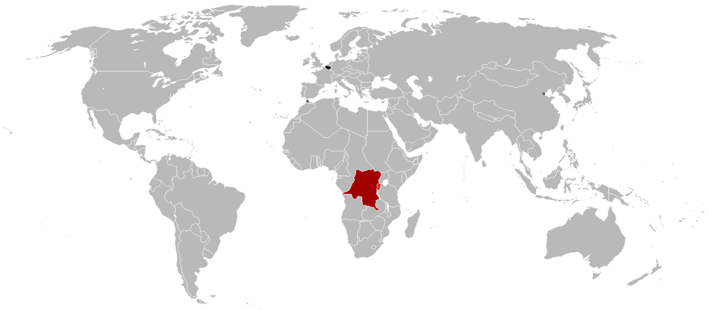

A colonial empire refers to a nation that extends its sovereignty over foreign territories, establishing colonies and exploiting their resources, labor, and strategic advantages. Colonial empires were typically formed by more powerful countries, often through exploration, conquest, or political agreements, and these empires maintained control over vast regions across the world. Colonialism often involved the imposition of the colonizer's culture, economy, and political systems upon the indigenous populations of the colonized regions. Colonies were used for economic gain, military dominance, and political influence. The concept of a colonial empire was prevalent from the 15th century into the 20th century, particularly in Europe.
The British Empire is one of the most well-known examples of a colonial empire. At its height in the 19th and early 20th centuries, it was the largest empire in history, covering vast territories across Africa, Asia, the Americas, and Oceania. British colonization began in the 16th century and expanded through military conquest, settlement, and economic exploitation. Key colonies included India, Australia, Canada, and large parts of Africa, where the British imposed their political structures, economic systems, and cultural practices. The British Empire played a central role in global trade, especially during the Industrial Revolution, when raw materials from colonies fueled the empire’s economic growth. However, the legacy of the British Empire also includes significant issues, such as exploitation, displacement of indigenous populations, and long-term political and social impacts on colonized regions. Decolonization movements in the 20th century eventually led to the dissolution of most colonial empires, including the British Empire.
Learning about colonial empires is essential to understanding how modern global power structures developed. Colonial empires such as the British, French, Spanish, and Portuguese influenced international relations, shaped the borders of many countries, and impacted geopolitics for centuries. For example, the British Empire's dominance over India, from the mid-18th century to 1947, not only affected India's political and social systems but also played a key role in Britain's global dominance. This knowledge helps explain the legacy of European influence on non-Western nations, as well as the origins of ongoing geopolitical conflicts and alliances today. The partitioning of Africa by European powers in the late 19th century during the "Scramble for Africa" is another case where learning about colonial history sheds light on present-day border disputes and socio-political challenges on the continent.
Colonial empires were crucial in shaping the global economy, especially with the rise of mercantilism and the establishment of vast trade networks. These empires extracted wealth and resources from their colonies, creating the first wave of global trade, which laid the foundation for modern globalization. For example, the Spanish Empire's colonization of the Americas led to the massive influx of silver and gold into Europe, significantly boosting Spain’s economy while also causing inflation and creating new trade networks across the Atlantic. Understanding colonial empires helps us comprehend how wealth, resources, and labor exploitation fueled the industrial revolution in Europe and North America, shaping the economic disparities and trade patterns that continue today.
The cultural exchange between colonizers and the colonized had long-lasting effects, both positive and negative. Learning about colonial empires helps us understand the spread of languages, religions, and cultural practices, as well as the devastating impact of forced assimilation, oppression, and the erasure of indigenous cultures. For instance, the French colonization of North and West Africa left a deep cultural legacy, with French still being a dominant language in many former colonies, such as Senegal and Côte d'Ivoire. Moreover, the forced conversion to Christianity in many regions of Africa, Latin America, and Asia changed religious landscapes and contributed to the spread of European social structures. By studying colonial empires, we better appreciate the complexity of identity, migration, and cultural transformation that shapes the modern world.
The Spanish Empire was one of the largest and most powerful colonial empires in history, stretching across the Americas, Europe, Africa, and Asia from the 15th century to the early 19th century. Beginning with Christopher Columbus' voyage in 1492, Spain rapidly colonized large portions of the New World, including present-day Mexico, Central America, South America, and the Caribbean. The Spanish Empire was known for its extraction of resources, particularly silver and gold, from its colonies, which were crucial in fueling its dominance in Europe. The encomienda system, which placed native populations under Spanish control for labor and resource extraction, was infamous for its brutality and exploitation. Spanish cultural, religious, and architectural influences remain deeply embedded in many former colonies, particularly in Latin America, where Spanish is still the dominant language, and Catholicism is a major religion. The empire's decline began in the 19th century with the independence movements in its American colonies, but its legacy endures in the global spread of Spanish language, culture, and religion. More about Spanish Empire
Cr.: Wikimedia Commons
At its height, the British Empire was the largest empire in history, spanning over a quarter of the world's landmass and governing a vast and diverse population across every continent. The British Empire began in the 16th century with overseas exploration and expanded rapidly during the 17th and 18th centuries through a combination of military conquests, colonization, and trade. Key regions under British control included North America, India, the Caribbean, Africa, and parts of Southeast Asia and the Pacific. The empire's economic strength was built on trade, particularly the transatlantic slave trade and the exploitation of resources such as cotton, tea, and spices. The British East India Company played a pivotal role in controlling and economically exploiting India, often called the "jewel in the crown" of the British Empire. The empire's decline began after World War II, as decolonization movements gained momentum, leading to the independence of India, African nations, and many Caribbean islands. However, the legacy of British imperialism remains evident in the widespread use of the English language, the global influence of British political and legal systems, and the lasting effects of colonial borders and conflicts. More about British Empire
Cr.: The Washington Post
France had two major periods of colonial expansion, known as the First and Second French Empires. The First French Empire began in the 16th century and was primarily focused on the Americas, including parts of Canada, the Caribbean, and Louisiana in North America. The Second French Empire emerged in the 19th century, concentrating on North and West Africa, Southeast Asia, and the Pacific. France’s colonies provided raw materials and markets for French industrial goods, creating a strong economic link between France and its colonies. Culturally, France sought to "civilize" its colonies, promoting French language and culture, while implementing systems of indirect rule. Notably, the French colonial policy of "assimilation" encouraged the adoption of French cultural norms, which left a significant impact on education, law, and administration in many former colonies. Many countries in Africa, such as Algeria and Senegal, still bear the deep imprint of French culture, language, and legal frameworks. The empire began to decline after World War II, as decolonization movements swept across Africa and Asia, but the influence of French colonialism remains significant in many parts of the world. More about French Empire
Cr.: Reddit
The Portuguese Empire was one of the earliest European empires to engage in overseas exploration and colonization, establishing itself as a dominant maritime power in the 15th and 16th centuries. Portugal's empire spanned South America, Africa, and Asia, with key colonies in Brazil, Angola, Mozambique, and parts of India and Southeast Asia. The empire was built on a network of trading posts, which allowed Portugal to dominate the spice trade and exploit resources like gold, sugar, and slaves. Portugal’s role in the Atlantic slave trade was significant, with millions of Africans transported to the Americas to work on plantations, particularly in Brazil. The Portuguese empire also played a crucial role in spreading Christianity, as missionaries accompanied explorers and traders. Brazil, the largest colony in the empire, gained independence in 1822, while African colonies remained under Portuguese control until the mid-20th century. Despite its relatively small size, the Portuguese Empire had a lasting impact on global trade, culture, and language, particularly in Brazil, where Portuguese is still spoken by over 200 million people. More about Portuguese Empire
Cr.: Wikipedia
The Dutch Empire, though smaller compared to other European powers, played a vital role in global trade and colonization during the 17th century, particularly through the Dutch East India Company (VOC) and Dutch West India Company. The Dutch were primarily focused on controlling key trade routes and establishing commercial outposts rather than extensive territorial control. Major colonies included the Dutch East Indies (now Indonesia), parts of the Caribbean, and strategic ports in South Africa and Asia. The Dutch were leaders in maritime technology and dominated global trade in spices, sugar, and slaves during the 17th century's "Golden Age." The Dutch colonial strategy relied heavily on commerce and trade, which allowed them to become one of the wealthiest nations in Europe during this period. The empire began to decline in the 18th century as it faced competition from the British and the French. Nevertheless, the legacy of Dutch colonialism is still evident, particularly in Indonesia and Suriname, where Dutch language and cultural influences remain. More about the Dutch Empire
Cr.: Study.com
The Belgian Empire, though relatively short-lived compared to other colonial empires, was infamous for its brutal exploitation of the Congo Free State under King Leopold II in the late 19th and early 20th centuries. King Leopold personally controlled the Congo and imposed a system of forced labor to extract rubber, leading to the deaths of millions of Congolese people through violence, famine, and disease. The atrocities in the Congo eventually led to international condemnation, and the Belgian government took control of the colony in 1908, renaming it Belgian Congo. Belgian colonial rule remained harsh, but it also brought some infrastructure development, such as railways and schools. The legacy of Belgian colonialism in the Congo is one of deep trauma and economic exploitation, which continues to affect the Democratic Republic of Congo today. The Belgian Empire dissolved in the mid-20th century as African nations gained independence. More about Beligian Empire
Cr.: Wikipedia
Colonial empires often imposed a rigid class structure that significantly differed from the pre-existing social hierarchies of the regions they controlled. In many cases, a small group of European settlers or colonial administrators occupied the top tier of society, holding all the power, wealth, and privileges. Beneath them were various groups, including mixed-race individuals, local elites who collaborated with the colonial authorities, and, at the bottom, indigenous populations and slaves. For example, in the Spanish Empire, the casta system was implemented in colonial Latin America, which classified people based on their racial heritage. Spaniards born in Europe (peninsulares) occupied the top rank, followed by creoles (Spaniards born in the colonies), mestizos (mixed Spanish and indigenous ancestry), and at the bottom were indigenous people and African slaves. This system not only enforced social divisions but also maintained colonial authority by stratifying society in a way that ensured European dominance.
Religion played a crucial role in the colonial enterprise, often serving as both a tool for domination and a source of resistance. European colonizers, especially the Spanish, Portuguese, and French, saw the spread of Christianity as a moral justification for colonization. Missionaries were dispatched to convert indigenous populations, and colonial authorities built churches and established religious schools to enforce Christian doctrine. For example, in Mexico, Spanish colonizers destroyed indigenous religious temples and replaced them with Catholic churches, often using forced conversion to impose their faith. While Christianity became dominant in many parts of the Americas, Africa, and Asia, it often merged with local religious practices, leading to syncretic forms of worship. In contrast, the British Empire generally followed a more hands-off approach to religion in some of its colonies, such as India, where they allowed Hinduism and Islam to continue, although they did promote Christianity among certain groups. Religion was also a source of resistance, as indigenous populations used their spiritual beliefs to maintain cultural identity and fight against colonial rule, such as in the case of the Pueblo Revolt in New Mexico in 1680, where indigenous peoples rose up against Spanish religious oppression.
The use of slavery and forced labor was a central aspect of many colonial societies, particularly in regions where cash crops, mining, and resource extraction were central to the economy. African slaves were transported to the Americas in massive numbers to work on plantations growing sugar, tobacco, cotton, and other crops that were critical to the colonial economy. For example, in the British Empire, the Caribbean islands such as Jamaica and Barbados became highly profitable because of their sugar plantations, which relied almost exclusively on enslaved African labor. The brutal conditions on these plantations, combined with the inhumane treatment of slaves, led to high mortality rates. Despite these conditions, slavery became deeply entrenched in colonial societies, reinforcing racial hierarchies and fueling economic prosperity for European powers at the expense of human suffering.
Colonial powers often sought to impose their culture, religion, and values on the societies they dominated, which led to both cultural assimilation and resistance. Missionary work was a common method used to convert indigenous populations to Christianity, particularly in the Spanish and Portuguese Empires. In places like Mexico, Spanish missionaries actively sought to Christianize indigenous peoples, building churches over sacred indigenous sites and introducing European customs, values, and language. However, these efforts were met with resistance in many instances, as indigenous peoples either maintained their traditional beliefs in secret or adapted Christian beliefs to fit within their own cultural frameworks. For example, the Pueblo Revolt of 1680 in New Mexico was a significant uprising where the indigenous Pueblo people successfully resisted Spanish rule and Christian conversion for a time, reclaiming their traditional religious practices.
In colonial societies, family structures and gender roles were deeply influenced by both European customs and local traditions. European colonizers often imposed patriarchal family norms, where men held primary authority over households and public life, while women were relegated to domestic roles. For example, in British colonies like India, the colonial administration promoted Victorian ideals of gender, expecting women to maintain the home and focus on child-rearing, while men worked in the fields of administration, trade, or military service. However, this ideal often clashed with indigenous practices. In many African and indigenous American societies, women played significant roles in economic and political spheres before colonization. Under colonial rule, these roles were frequently diminished, with women losing political power and becoming more confined to the domestic sphere. Still, women in colonized societies often found ways to resist or adapt to these changes, participating in trade or agriculture, or even leading resistance movements, such as the female warriors of Dahomey in West Africa, who played a prominent role in defending their kingdom against European incursions.
The daily lives of low-class individuals in colonial empires, particularly slaves, indigenous laborers, and the rural poor, were marked by hardship, exploitation, and limited mobility. In colonies like Haiti, enslaved Africans worked under brutal conditions on sugar plantations, enduring long hours of grueling labor with little to no personal freedom. They lived in overcrowded, unsanitary conditions and were subjected to harsh punishments. The economic system offered no upward mobility, and their lives were controlled by colonial masters. Indigenous people, such as the native populations in Spanish colonies, were often forced into labor systems like the encomienda, where they worked for Spanish landowners under exploitative conditions. In some cases, the imposition of European agricultural practices led to the disruption of traditional ways of life, such as the hunting and gathering economies of indigenous North Americans. Despite these challenges, enslaved and indigenous people found ways to resist and preserve aspects of their cultures, from covert forms of rebellion to maintaining traditional religious practices.
The colonial middle class typically consisted of small landowners, merchants, artisans, and, in some cases, a growing class of colonial-born Europeans or mixed-race individuals (such as the creoles in Latin America). These individuals occupied a precarious position in colonial society, often benefiting from economic opportunities but lacking the social or political privileges of the colonial elite. For instance, in British colonies in North America, many colonists worked as farmers or tradespeople, living relatively simple lives in rural or small urban communities. Merchants played an essential role in the colonial economy, trading goods both locally and across the Atlantic. While some middle-class individuals experienced economic success, particularly through trade, they were often frustrated by restrictions placed on them by colonial authorities. In Spanish colonies, the creole middle class began to grow resentful of the peninsulares (Spaniards born in Europe) who monopolized political power, which eventually contributed to independence movements in the 19th century. Social mobility was limited, and access to political power and wealth was largely reserved for European-born elites.
The upper class in colonial societies, often consisting of European settlers, colonial administrators, and local elites who collaborated with the colonizers, lived lives of relative luxury and privilege. These individuals owned large estates, engaged in profitable trade, and held key administrative and political positions. For example, in British India, the British colonial officers and wealthy merchants lived in grand homes, enjoyed the best of European goods, and maintained a lifestyle reminiscent of the aristocracy back home. They often employed large numbers of servants and local laborers to maintain their estates and businesses. In Latin America, Spanish landowners and administrators who controlled the encomiendas were at the top of the social hierarchy, accumulating wealth through the exploitation of indigenous labor. This upper class enjoyed access to education, luxury goods, and political influence, which starkly contrasted with the lives of the lower classes. However, the reliance on exploitation and inequality meant that the colonial upper class was often isolated from the realities of the societies they governed, which sometimes led to uprisings and unrest.
Economic life in colonial empires was centered around resource extraction, agriculture, and trade, primarily for the benefit of the colonizing powers. Colonies were seen as sources of raw materials and markets for European goods. In the Americas, the plantation system became a dominant economic structure, where cash crops like sugar, tobacco, and cotton were produced on large estates using enslaved African labor. For instance, in the Caribbean, British colonies such as Barbados and Jamaica were heavily reliant on sugar production, and the wealth generated from these plantations fueled the economy of the British Empire. Indigenous populations were often displaced or forced into labor, and local economies were disrupted as European powers sought to integrate the colonies into a global trade network. In regions like India, the British East India Company monopolized key industries such as textiles, leading to the decline of local craft industries and the impoverishment of many Indian artisans. Economic policies like these entrenched poverty in the colonies while enriching the European powers.
Education in colonial societies often served as a tool for cultural domination. Colonial powers established schools that taught European languages, history, and values, aiming to create a class of educated locals who could assist in the administration of the colonies but were loyal to the colonial regime. In French colonies, the policy of "assimilation" sought to turn local populations into "Frenchmen" through education and cultural indoctrination. In places like Algeria and Vietnam, French was taught in schools, and French culture was promoted as superior to local traditions. This education system created a class of elites who were versed in European ways but often distanced from their indigenous roots, leading to complex identities and social tensions within colonial societies. However, this also paved the way for the rise of nationalist movements, as educated locals later used their knowledge to challenge colonial rule and fight for independence.
Science in the colonial empires played a pivotal role in advancing European dominance and control over new territories. The exploration of lands, the classification of flora and fauna, and the understanding of geography and astronomy all progressed significantly during this period, often driven by colonial motivations. Colonial empires established research institutions and promoted scientific discoveries that aligned with their imperial interests, such as improving navigation, agriculture, and understanding local environments. Scientific expeditions were frequently conducted in colonized regions, where the knowledge gained was brought back to Europe to further the empire’s expansion. These advances not only fueled the economy but also fostered scientific inquiry in various fields, from botany to cartography.
Botany saw major development during the age of colonial empires, driven by the need to catalog and utilize the resources of newly colonized lands. One prominent figure in this field was Carl Linnaeus, a Swedish botanist whose classification system for plants, animals, and minerals revolutionized the study of natural history. Linnaeus developed the binomial nomenclature, the system of naming species using two Latin names (genus and species), which remains the standard today. European empires, particularly the British, French, and Spanish, funded botanical expeditions to their colonies to discover new species and understand the agricultural potential of these regions. For example, in the Caribbean and South America, European scientists discovered and classified a wide array of new plants, many of which were transported back to Europe for cultivation. The discovery of crops like sugar cane and spices had significant economic implications, transforming colonial economies and European trade networks. Linnaeus' system allowed these new species to be systematically studied and categorized, aiding European control over natural resources.
Geography and cartography were critical sciences during the colonial period, as accurate maps and understanding of the Earth's geography were essential for navigation and territorial expansion. One of the most famous figures in this area was the British explorer and cartographer James Cook. Cook's voyages in the Pacific Ocean, particularly his exploration of Australia, New Zealand, and the Hawaiian Islands, expanded European knowledge of the globe and opened new routes for colonial expansion. His maps were renowned for their accuracy and detail, and they allowed the British Empire to exert control over distant territories. For example, Cook’s exploration of Australia in the 1770s helped pave the way for British colonization in 1788, as his maps provided critical information about the continent's coastlines, resources, and native populations. Cook’s work exemplifies how cartography was not just a scientific endeavor but a tool of empire, enabling European powers to chart, claim, and exploit distant lands.
Medicine advanced during the colonial era largely due to the necessity of keeping European colonizers and soldiers healthy in foreign climates. A significant example is the discovery and use of quinine, a treatment for malaria. Malaria was a deadly disease that plagued European settlers and troops in tropical colonies, particularly in Africa and South America. The indigenous populations in these regions had long used the bark of the cinchona tree to treat fever, and European scientists, recognizing its potential, isolated quinine, the active ingredient, in the 19th century. Quinine became an essential medicine in the European colonization of Africa, allowing Europeans to survive in tropical climates that had previously been deadly due to malaria. The use of quinine facilitated the "Scramble for Africa" by enabling European powers to penetrate and colonize regions that had previously been inaccessible due to disease. This medical breakthrough significantly impacted the course of colonial expansion and European dominance in tropical regions.
Astronomy also played a vital role in colonial science, particularly in navigation and exploration. One significant example is the 18th-century expeditions to observe the transit of Venus, a phenomenon where Venus passes directly between the Earth and the Sun, allowing astronomers to measure the distance between the Earth and the Sun more accurately. One of the most famous expeditions was led by James Cook in 1769 to the Pacific island of Tahiti. The observation of the transit was part of a global effort to refine astronomical knowledge, which had direct implications for navigation at sea. Improved understanding of celestial bodies and their movements enabled more precise navigation, which was crucial for the expansion of European empires. These astronomical advances helped European ships traverse the globe more efficiently, aiding in both trade and the colonization of distant lands.
The development of physics and engineering during the colonial period also transformed colonial societies, particularly through advancements in transportation and industrial machinery. One of the most significant inventions was the steam engine, perfected by James Watt in the late 18th century. The steam engine revolutionized transportation and industry, particularly in European colonies where the extraction and transport of resources were vital to the colonial economy. In British India, for example, steam engines were used to power textile mills and railways, facilitating the exploitation of India’s raw materials and the distribution of manufactured goods. The expansion of railroads in colonies like India and Africa allowed colonial governments to exert greater control over large territories, moving troops and resources more efficiently across vast distances. The steam engine thus became a symbol of industrial and colonial power, transforming both European and colonial societies.
Philosophy during the age of colonial empires reflected the complex interplay between European intellectual traditions and encounters with new cultures. While European thinkers continued to develop ideas rooted in the Enlightenment, colonial expansion introduced new ethical dilemmas regarding the treatment of indigenous peoples, slavery, and governance. Philosophers began questioning the moral implications of imperialism and the nature of human rights, sovereignty, and civilization. Colonialism became not only a subject of political interest but also of deep philosophical inquiry. These philosophical debates influenced policies and attitudes towards colonial governance and shaped how Europeans understood their role in the wider world.
One significant philosophical debate during the colonial period revolved around the ethics of colonization and the treatment of indigenous populations. Bartolomé de las Casas, a Spanish Dominican friar, became an outspoken advocate for the rights of Native Americans in the Spanish colonies. Initially a participant in the colonial enterprise, de las Casas eventually renounced his role and dedicated his life to defending the indigenous peoples against the brutal exploitation and violence inflicted upon them by Spanish settlers. His philosophical writings, particularly A Short Account of the Destruction of the Indies, argued that Native Americans were rational human beings with souls, deserving of the same rights and protections as Europeans. His work raised fundamental questions about the nature of human rights, justice, and the moral responsibilities of colonial powers. Although his ideas were not widely accepted at the time, they laid the groundwork for later discussions on human rights and ethical colonialism.
Political philosophy during the colonial period was also influenced by the expansion of empires and the idea of governance. John Locke, one of the most influential philosophers of the Enlightenment, developed ideas that had direct implications for colonialism. Locke’s theory of property, outlined in his Two Treatises of Government, justified the acquisition of land through labor. According to Locke, land that was "improved" by cultivation or industry could be rightfully claimed as property, a concept that European colonizers used to justify taking land from indigenous peoples who did not engage in European-style agriculture. Locke’s political philosophy, which emphasized individual rights and government by consent, had a paradoxical influence on colonialism. While it promoted liberty and democracy in Europe, it also provided intellectual support for the dispossession of indigenous lands in the Americas, Africa, and Asia, as European settlers claimed to bring "civilization" through their superior forms of government and property management.
The expansion of European empires during the colonial period also prompted philosophical inquiries into the nature of race and human difference. Immanuel Kant, one of the most prominent philosophers of the 18th century, contributed to this discourse through his essays on anthropology and race. In his work Observations on the Feeling of the Beautiful and Sublime, Kant classified humanity into different racial groups and suggested that some races were more intellectually and morally developed than others. Kant's ideas, though complex and often contradictory, were used by some to justify the racial hierarchies that underpinned European colonialism. His philosophy contributed to the development of modern racial thinking, which categorized people into racial groups based on physical and intellectual differences. These ideas were often employed to legitimize the European domination of non-European peoples, reinforcing colonial ideologies of racial superiority and inferiority.
Colonialism also influenced philosophical discussions on religion, particularly the relationship between European Christianity and the spiritual beliefs of indigenous populations. René Descartes, a foundational figure in modern philosophy, emphasized the importance of reason and doubt in understanding the world. His philosophical method, outlined in Meditations on First Philosophy, sought to strip away all assumptions and build knowledge from a foundation of clear and distinct ideas. While Descartes did not directly engage with colonialism, his rationalist approach influenced how Europeans viewed non-Christian religions in colonized regions. Many European intellectuals, following Descartes' emphasis on reason, dismissed indigenous spiritual practices as irrational or superstitious. This philosophical perspective played a role in the European mission to "civilize" colonized peoples by converting them to Christianity and imposing European religious practices, often at the expense of native belief systems.
As colonial empires expanded, new forms of governance were required to manage vast and diverse territories. Jeremy Bentham’s utilitarian philosophy, which advocated for the greatest happiness for the greatest number, became influential in shaping colonial policies. Bentham argued that laws and institutions should be designed to maximize societal well-being, and this idea was applied to the governance of colonies. British administrators, for example, used utilitarian principles to justify policies in India that were aimed at promoting economic development and social order, even if they led to significant suffering for certain groups. While Bentham himself did not extensively write about colonialism, his utilitarian framework provided a philosophical justification for British colonial rule, as it was presented as a system that aimed to improve the material conditions of colonized populations, even when it conflicted with local customs or caused disruption.
One of the key lessons from the colonial empires is the profound impact of cultural exchange. Colonialism brought diverse cultures into contact, leading to the exchange of ideas, technologies, and traditions. European powers introduced new agricultural practices, languages, and religions to the colonies, while the colonized peoples contributed their knowledge of local environments, medicinal practices, and customs. This blending of cultures, although often forced and unequal, resulted in a fusion of art, cuisine, and beliefs that can still be seen today. For instance, African music and rhythms brought to the Americas by enslaved peoples laid the foundations for modern jazz and blues. Similarly, crops like potatoes and tomatoes, originating in the Americas, transformed European diets. This lesson highlights the importance of cross-cultural interaction and the lasting legacy of colonial exchange in shaping global culture.
Colonial empires teach a stark lesson about the destructive consequences of exploitation and inequality. European powers extracted vast wealth from their colonies through the forced labor of indigenous populations and enslaved peoples, leading to widespread suffering and social dislocation. The transatlantic slave trade, in particular, was one of the most brutal systems of exploitation, leading to the displacement and deaths of millions of Africans. The wealth generated by colonial exploitation fueled Europe’s industrialization and economic growth but left deep scars on the societies that were colonized. The legacies of inequality, racial discrimination, and economic disparity are still evident today in many post-colonial societies. This lesson underscores the need to recognize and address the long-term effects of systemic injustice and to seek more equitable and ethical ways of engaging with other cultures and nations.
A significant lesson from the colonial era is the role of technology and innovation in enabling and shaping empire-building. European colonization was driven, in part, by advancements in navigation, shipbuilding, and weaponry. The development of the compass, astrolabe, and more advanced ships like the caravel allowed European explorers to travel farther and establish colonies in distant lands. For example, Portuguese navigators used these technologies to reach India, establishing a lucrative trade route that solidified their empire. Likewise, gunpowder technology provided European armies with a military advantage over indigenous forces, enabling them to conquer vast territories. This lesson illustrates the double-edged nature of technological innovation—while it can lead to progress and expansion, it can also be used for domination and oppression when wielded unethically.
Colonial empires also teach an important lesson about the power of resistance and adaptation. Colonized peoples, despite the overwhelming power of European empires, found ways to resist and adapt to colonial rule. From large-scale rebellions, like the Haitian Revolution, where enslaved people successfully overthrew French colonial rule, to more subtle forms of resistance such as preserving indigenous languages and traditions, colonized societies did not passively accept domination. They found ways to negotiate power, resist exploitation, and assert their cultural identity. This lesson shows the resilience of human societies in the face of oppression and the importance of resistance movements in shaping the course of history. The ability of colonized peoples to adapt and maintain their cultural heritage despite efforts to erase it is a powerful testament to human resilience.
Finally, colonial empires offer a lesson in the ethical dilemmas of empire-building. The philosophical and moral questions raised by colonialism—such as the right to self-determination, the ethics of conquest, and the justification of empire—continue to resonate in modern political and philosophical discourse. Figures like Bartolomé de las Casas and critics of imperialism raised important ethical concerns about the treatment of indigenous peoples and the morality of empire. These debates forced European societies to confront the contradiction between their Enlightenment ideals of liberty and equality and the realities of their colonial practices. This lesson serves as a reminder that power, when unchecked and unexamined, can lead to significant moral compromises. It also highlights the importance of critically reflecting on the use of power in international relations and the ethical responsibilities that come with global leadership.
Finally, colonial empires offer a lesson in the ethical dilemmas of empire-building. The philosophical and moral questions raised by colonialism—such as the right to self-determination, the ethics of conquest, and the justification of empire—continue to resonate in modern political and philosophical discourse. Figures like Bartolomé de las Casas and critics of imperialism raised important ethical concerns about the treatment of indigenous peoples and the morality of empire. These debates forced European societies to confront the contradiction between their Enlightenment ideals of liberty and equality and the realities of their colonial practices. This lesson serves as a reminder that power, when unchecked and unexamined, can lead to significant moral compromises. It also highlights the importance of critically reflecting on the use of power in international relations and the ethical responsibilities that come with global leadership.
Colonial empires were built on the extraction of resources, the exploitation of labor, and the development of new trade routes. European powers imposed systems of forced labor, such as slavery and indentured servitude, to maximize profits from crops like sugar, tobacco, and cotton. The transatlantic slave trade, for example, forcibly transported millions of Africans to work in plantations in the Americas. These economic systems enriched European countries while impoverishing colonized regions and created lasting global inequalities, with the effects of this exploitation still visible today in terms of wealth distribution and development.
Colonial empires were sites of intense cultural exchange, though often under violent and coercive circumstances. Colonizers brought European languages, religions, and customs to the colonies, while they also adopted and adapted local traditions, foods, and knowledge. The introduction of crops such as potatoes and maize from the Americas transformed European agriculture and diets, while African musical traditions influenced the development of new art forms in the Americas, such as jazz and blues. However, this cultural exchange was often accompanied by efforts to suppress indigenous cultures, including the erasure of languages and religions.
Throughout the history of colonial empires, there was constant resistance from colonized peoples. From armed uprisings to everyday forms of cultural resistance, the colonized populations did not passively accept European domination. One of the most famous examples of successful resistance was the Haitian Revolution (1791–1804), where enslaved Africans overthrew French colonial rule and established the first Black republic. Resistance took many forms, including political rebellion, cultural preservation, and intellectual movements that criticized imperialism and advocated for self-determination.
The legacies of colonial empires are still felt today in political, social, and economic contexts. Many modern nation-states were formed as a result of colonial boundaries, often creating challenges such as ethnic conflict and political instability. The economic systems established during the colonial era continue to influence global trade, and former colonies still deal with the ramifications of underdevelopment caused by centuries of exploitation. Additionally, cultural influences from the colonial period remain evident in language, religion, and societal norms, with former colonies often maintaining strong ties to their former imperial powers, such as the continued use of European languages and legal systems.
1. How did the Hubble Deep Field observation in 1995 change our understanding of the universe?
2. Describe one contribution of ancient Babylonians to early astronomy.
3. Explain the impact of the Islamic Golden Age on the development of astronomy during the medieval period.
4. How did the heliocentric model proposed by Copernicus revolutionize our understanding of the solar system?
5. What are some of the key research areas in contemporary astronomy, and why are they significant?